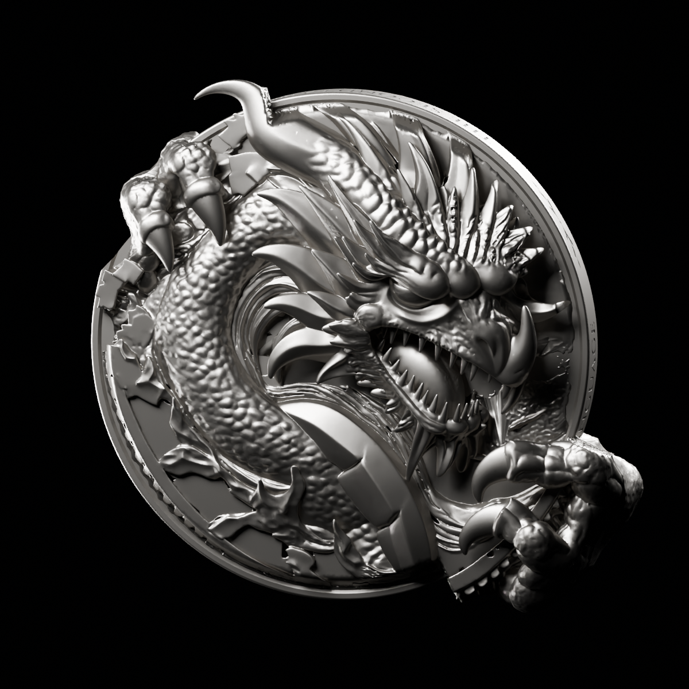
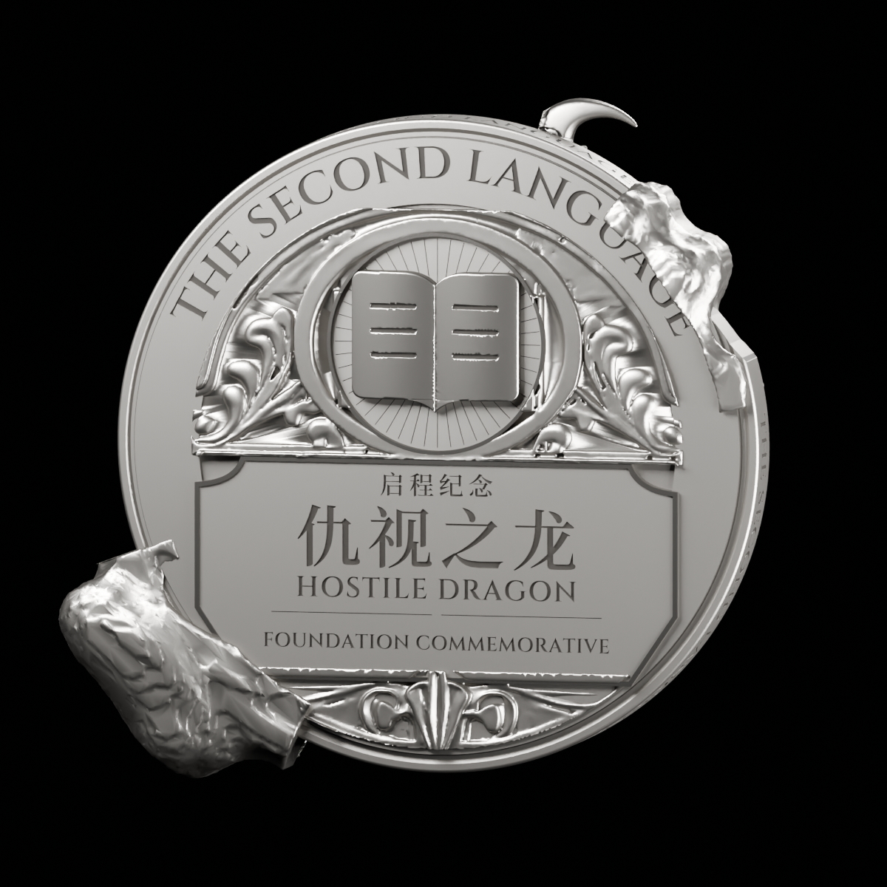
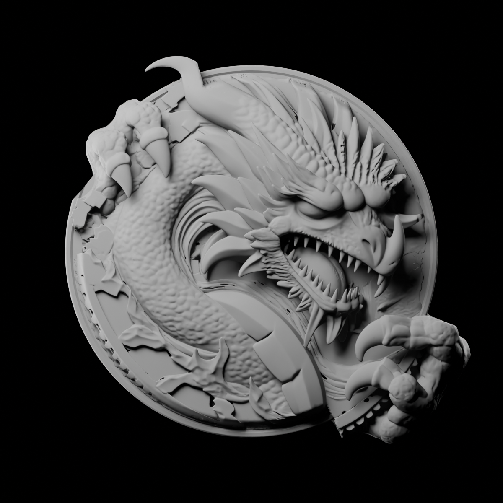
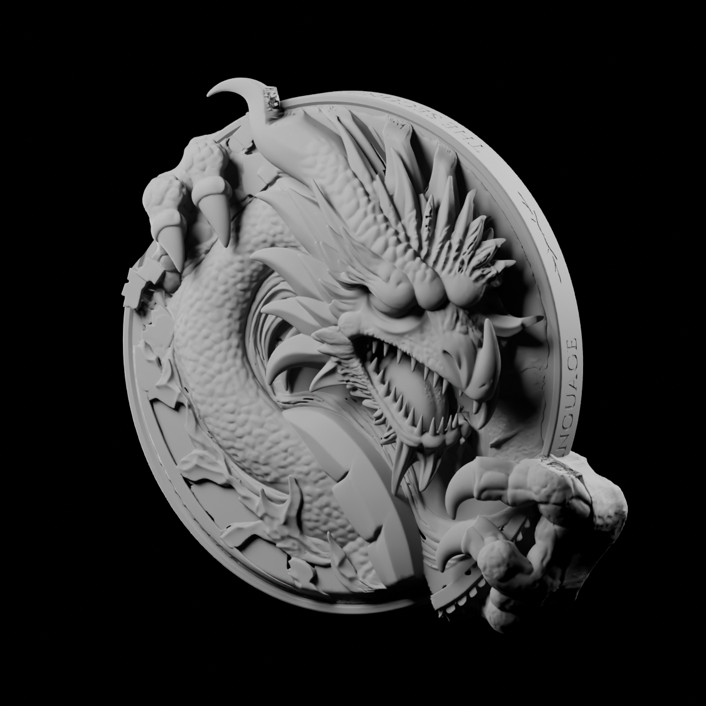
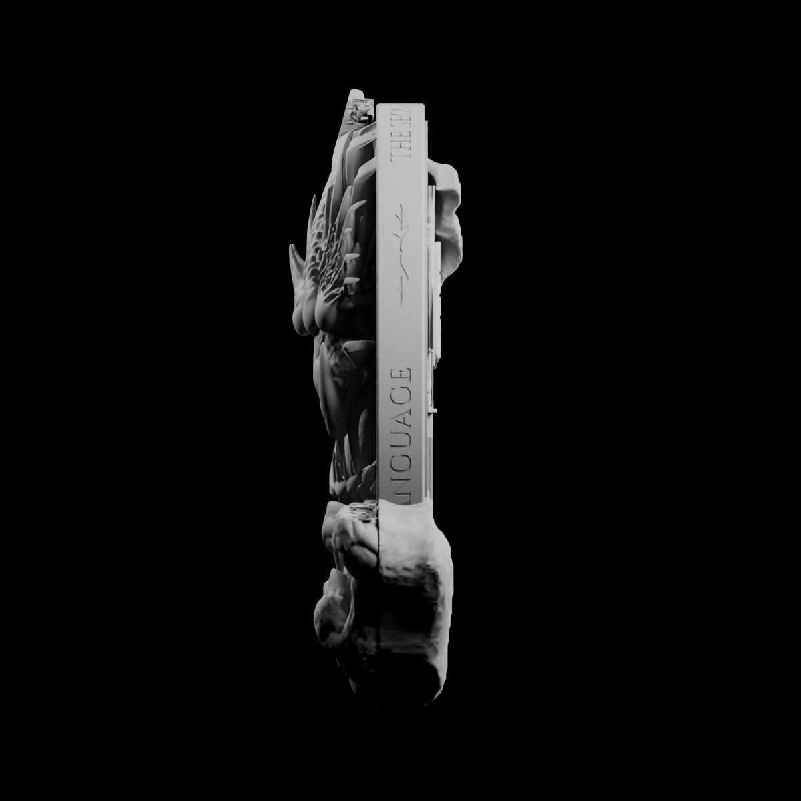
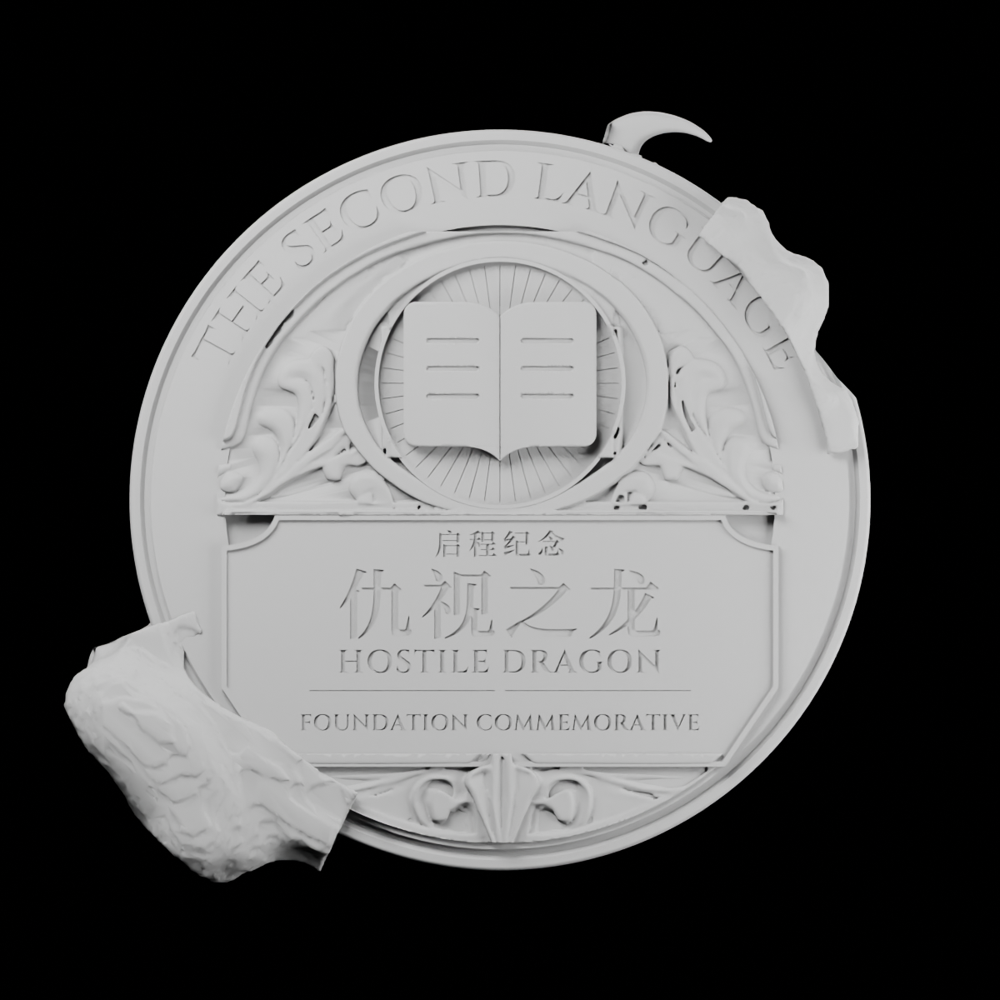
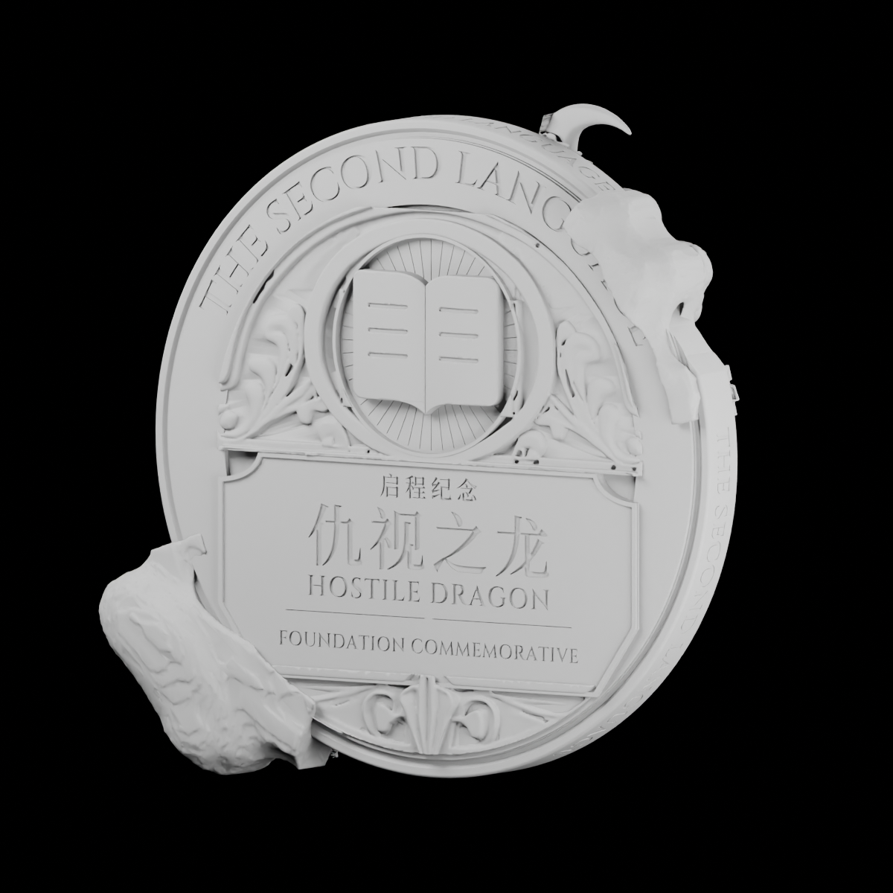
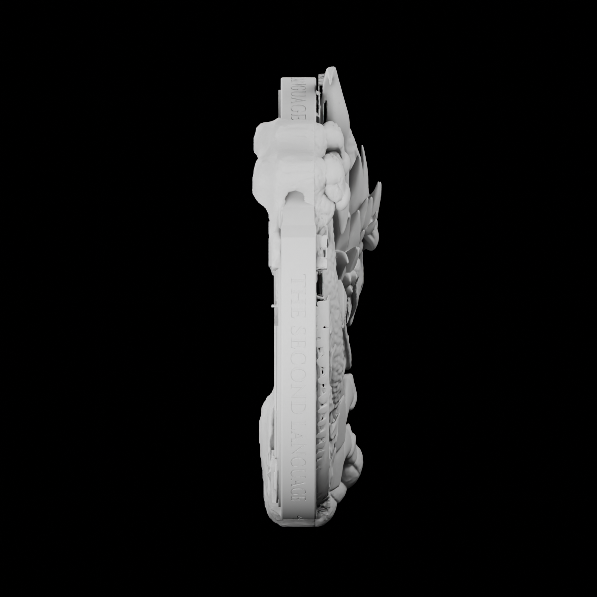

仇视之龙 · 参数币胚拟合样币
全部为同一实际模型的真实相机渲染。交互三维（需HTTP） · 制作与重建说明 · 可编辑Blend · 原始设计包

front-silver
reverse-silver
front-clay
front-quarter-clay
right-side-clay
reverse-clay
reverse-quarter-clay
left-side-clay币侧严格参数；币背视觉优先、参数为尺寸参考。艺术采用待用户验收。